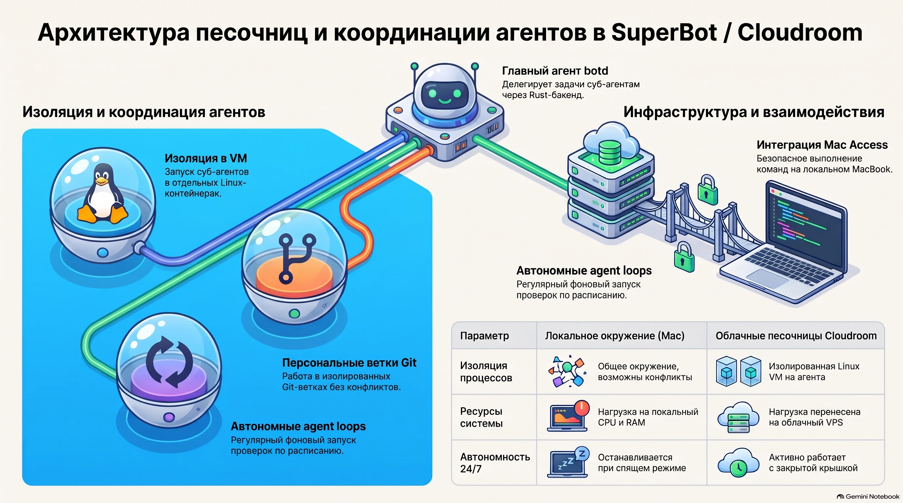
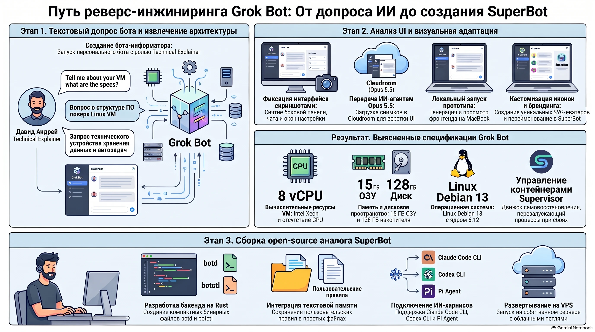
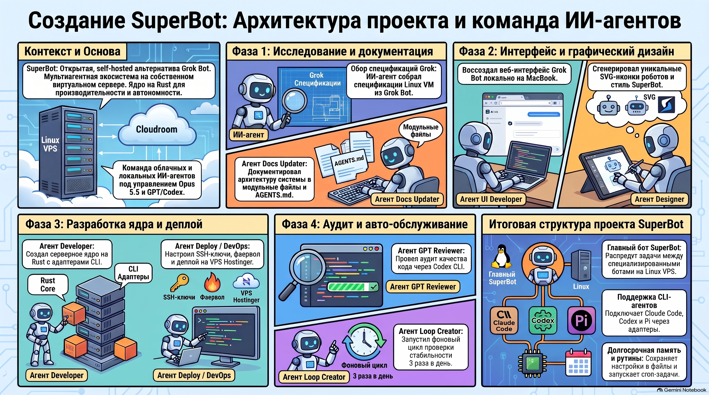
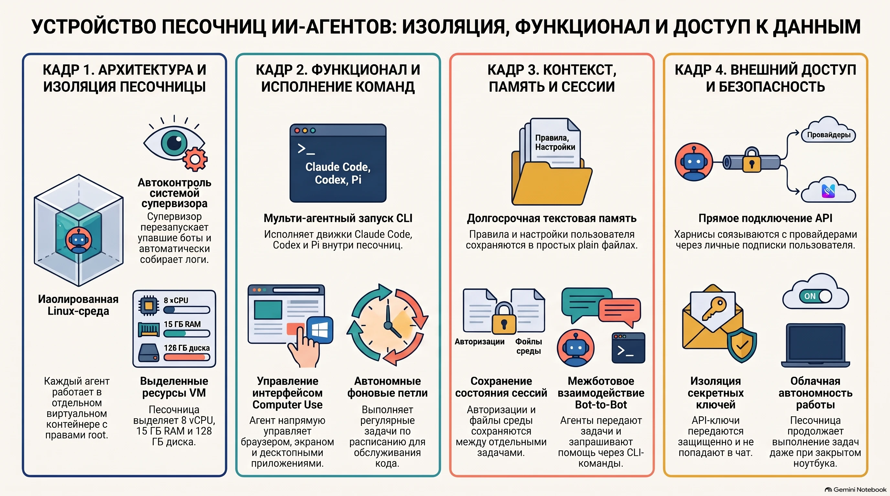
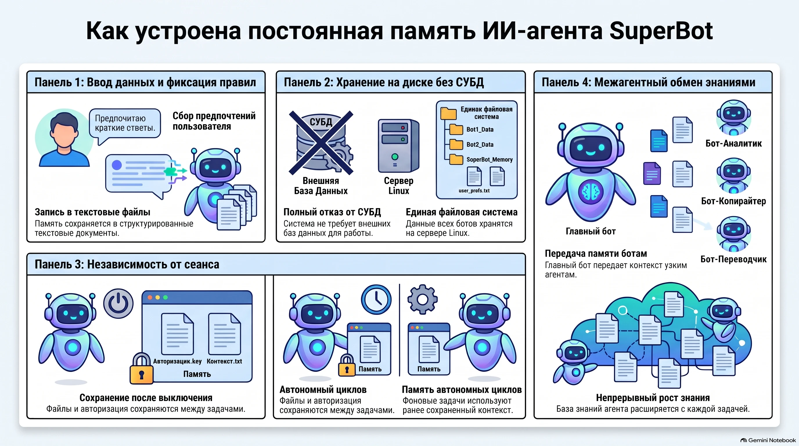

Разработка автономных ИИ-помощников нового поколения требует перехода от локальных однопоточных скриптов к масштабируемым облачным мультиагентным системам. Проект SuperBot, созданный разработчиком Дэвидом Андреем (David Ondrej), представляет собой открытую (open-source), самохостируемую альтернативу проприетарному Grok Bot. В основе инфраструктуры SuperBot лежит платформа Cloudroom, обеспечивающая безопасную контейнеризацию, динамическую оркестрацию ИИ-инженеров и прозрачное управление контекстом.

Данное техническое руководство подробно разбирает полный цикл создания и работы системы: от проведения исследования целевого чат-бота до построения независимой от ИИ-движка (harness-agnostic) архитектуры, изоляции песочниц, организации файловой памяти и автоматизации мультиагентных Git-процессов.
Процесс воссоздания закрытого сервиса начался с технического исследования внутренней среды виртуальной машины Grok Bot. Был применен метод прямого технического диалога (prompt-driven reverse engineering).

Для получения системных сведений внутри исследуемого бота был сформирован виртуальный профиль помощника с ролью Technical Explainer. Через целевые текстовые запросы на английском языке удалось последовательно извлечь спецификации операционной системы и аппаратного обеспечения:
Ключевой диагностический запрос: "Tell me about your VM, what are the specs?" (Расскажи о своей виртуальной машине, какие у нее технические характеристики?)
Следствием данного и сопутствующих запросов стало раскрытие ботом конфигурации своего рантайма:
Для воссоздания фронтенда Дэвид сделал серии скриншотов оригинального интерфейса и передал их в мультиагентную среду Cloudroom. Модели фронтирного уровня (в частности, Claude 3.5 Sonnet / Opus 5.5) выполнили визуальный анализ элементов управления, робо-аватаров и чат-компонентов, сразу сгенерировав готовый React/Tailwind код для интерфейса SuperBot.
Архитектура SuperBot проектировалась с расчетом на высокую производительность, минимальное потребление системных ресурсов VPS и полную независимость от конкретного поставщика ИИ-моделей.

Серверная часть SuperBot реализована на языке Rust. Бинарные исполняемые файлы botd (демон-супервизор) и botctl (CLI-утилита управления) обеспечивают:
Платформа Cloudroom не привязана к какому-то одному ИИ-движку. Исполнительный слой изолирован абстрактным интерфейсом адаптеров.
| Поддерживаемый Harness / Agent | Сфера применения в SuperBot / Cloudroom |
|---|---|
| Claude Code CLI | Основная кодогенерация, архитектурный рефакторинг и сложный анализ |
| Codex CLI | Выполнение быстрых скриптов, генерация тестов и code review |
| Pi Agent | Легковесные автономные задачи и фоновый мониторинг |
| Grok Build & Hermes Agent | Специализированные агенты сборки и планирования |
| Расширенный стек Cloudroom (22+) | Cursor, OpenCode, Devin, Droid, fx, OpenClaw, Kimi Code, Gemini, DeepSeek Harness, GitHub Copilot |
При работе с облачными агентами возникает необходимость безопасной передачи данных на локальный компьютер. В Cloudroom реализован мост Mac Access:
Главное отличие Cloudroom от локальных систем запуска агентов — строгая контейнеризация каждого цифрового сотрудника.

Каждая задача или каждый субагент запускается в собственной изолированной Linux-песочнице (контейнере):
walled off) от хостовой системы VPS и других песочниц. Поломка окружения в одной песочнице не влияет на соседних агентов или сам сервер.Критический вопрос архитектуры — как изолированные песочницы получают доступ к общим файлам проекта и общаются между собой.
Песочницы разворачиваются на общем VPS, где расположено базовое хранилище проекта:
own branch).Для прямой коммуникации между агентами («bot-to-bot») без участия человека используется CLI-инструмент Room CLI:
room-cli send --to agent-2 --message "API готова" передает статус или данные.room-cli history для получения журнала событий текущей комнаты и решений других агентов.Room CLI распределяет подзадачи суб-агентам (Developer, UI Designer, Tester) и собирает от них итоговые статусы.В отличие от систем, полагающихся на сложные векторные базы данных (Vector DB) и RAG-пайплайны, SuperBot использует файловую модель памяти.

AGENTS.md или .agents/skills/).Параллельная работа десятков агентов над одним репозиторием требует дисциплины ветвления и управления конфликтами.
Main Branch -----------------------------------------> (Stable Release)
\ ^
\--> Agent Branch 1 (Feature) ------/ (rebase & GPT review)
\--> Agent Branch 2 (Bugfix) ------/ (rebase & auto-test)
botd создает для агента отдельную ветку в Git (own branch, например feature/ui-header).git rebase origin/main. Это гарантирует, что его изменения накатываются поверх самого свежего кода, созданного другими агентами.Перед слиянием кода с веткой main активируется фаза перекрестной проверки:
Codex CLI или Claude Code), исполняющий скилл /GPT review.git diff, проверяет соблюдение стиля и корректность типов.Если возник конфликт слияния (merge conflict):
push в main.Agent Loops — это механизм превращения ИИ-агентов из пассивных исполнителей в проактивные фоновые службы.
botd поднимает временную песочницу, агент выполняет аудит, вносит изменения и завершает работу.Для запуска собственного экземпляра SuperBot выполните следующие пошаговые инструкции:
davidondrej/superbot с GitHub.cargo build --release.botd и botctl будут сформированы в целевой директории ./target/release/.cp .env.example .env..env.Запустите демон-супервизор ./target/release/botd. После запуска откройте веб-интерфейс SuperBot в браузере и начните работу с вашим персональным мультиагентным помощником.